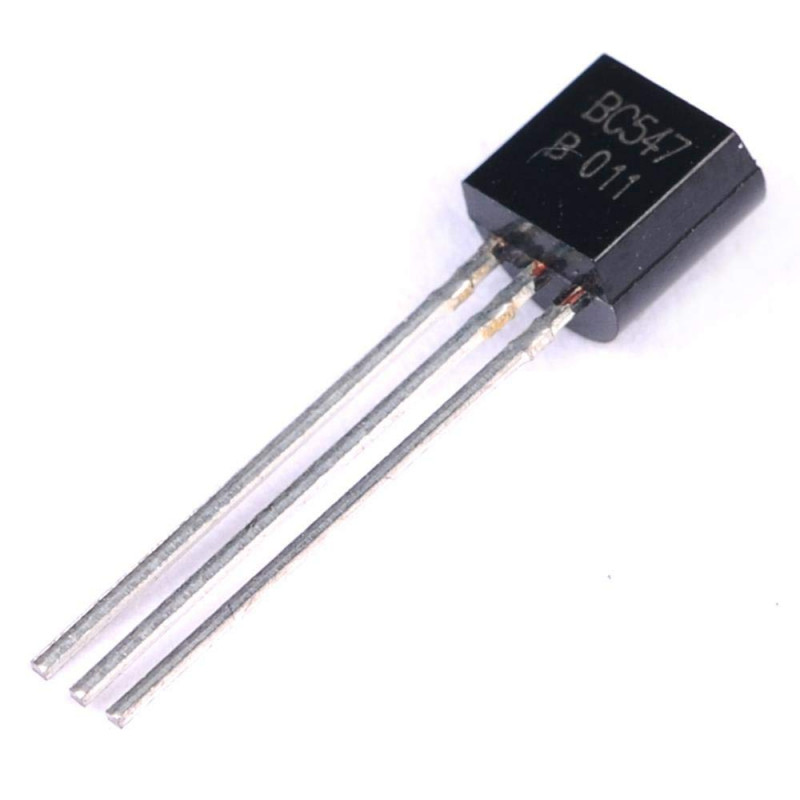
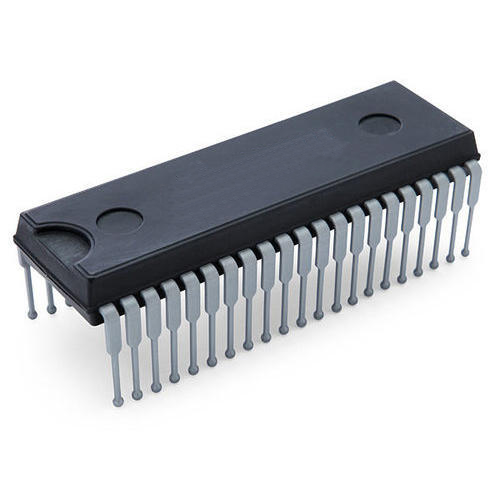
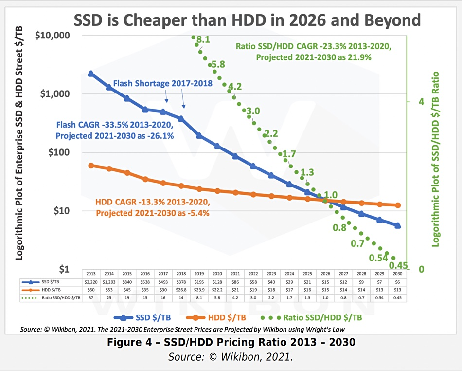
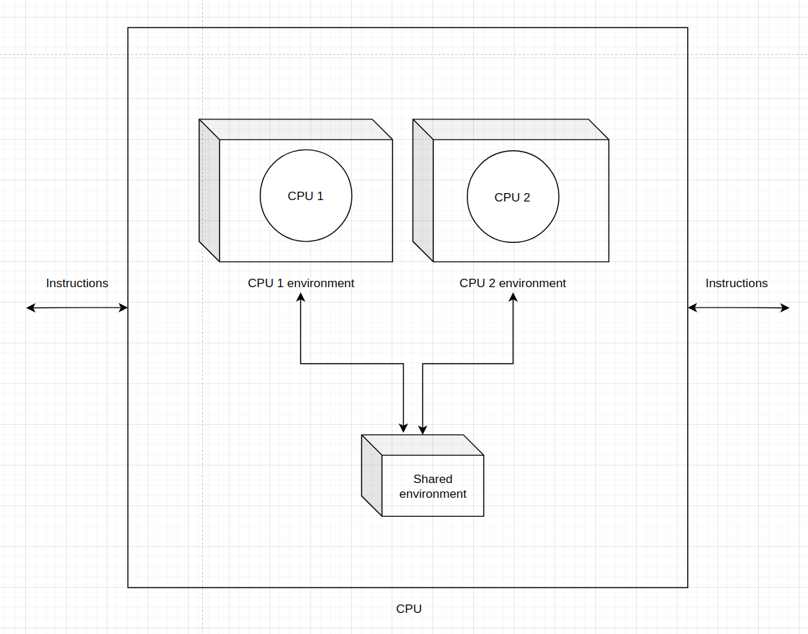
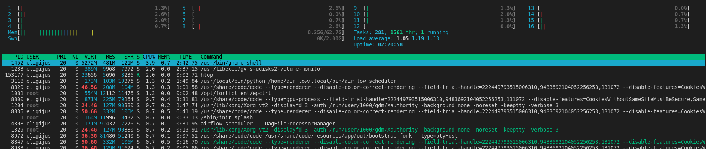
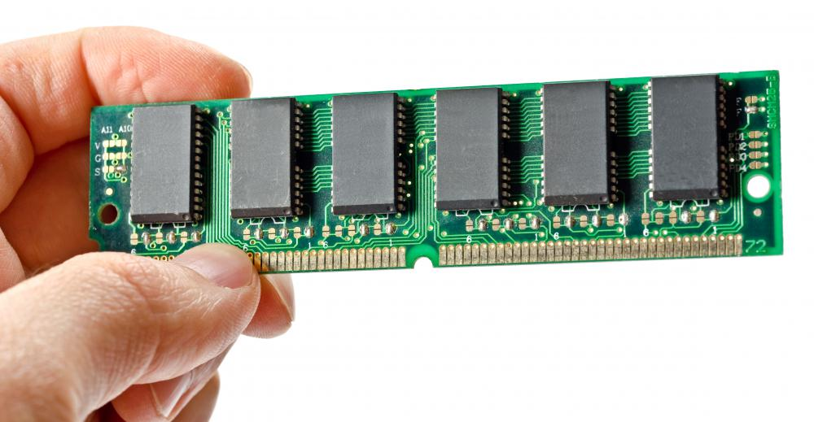
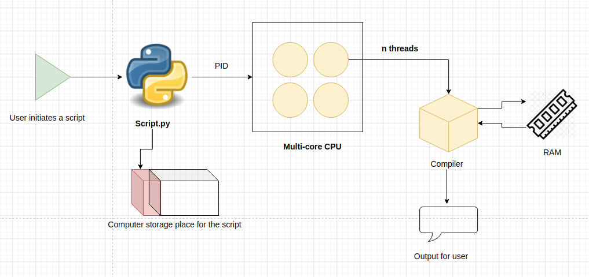

Building blocks of a computer¶
All the creation of the ML models and model serving could not be possible without a computer. Ussualy, when a project starts and the initial meetings take place, a large part of the conversation is about what hardware to use and how much will it cost. In order to estimate the potential costs and having in mind the scope of the project, it is imperative to know at least on the high level what are the main components of the computer from the standpoint of an Machine Learning engineer. The main parts, along with the popular acronyms, are:
Disk space - SSD and HDD
Processors - CPU units
Random access memory - RAM
Operating systems
What is a computer?¶
As per wiki [Wikipedia, 2020]:
“A computer is a machine that can be programmed to carry out sequences of arithmetic or logical operations automatically.”
The author Jonathan E. Steinhart augments this definition with some of this thoughts:
“Sending email and playing games are made possible by programs running on computers. The computer itself is like a newborn baby. It doesn’t really know how to do much. We hardly ever think about the basic machinery of human beings, because we mostly interact with the personalities that are running on that basic machinery, just like programs running on computers. For example, when you’re on a web page, you’re not reading it using just the computer itself; you’re reading it using programs someone else wrote that are running on your computer, the computer hosting the web page, and all of the computers in between that make the internet function.”
Putting these definitions and thoughts in simpler terms, a computer is a machine with various hardware parts working together in order to run software programs.
From a machine learning practitioner point of view, a computer is a machine which uses disk space, processors, computer memory, graphical units and operating systems in order to serve machine learning models to the client.
Main component of modern computers¶
Computers would not be that usefull if we could not store some data into it and the access it later. The building blocks of computer memory are bits. The bit represents a logical state with one of two possible values most commonly denoted as 1 or 0, True or False. How does a computer know when a bit has a value of 1 or 0? This is where transistors[] come into play. A transistor is one of the most influential inventions in the modern history, enabling anyone to have a powerfull and cheap computers in their households, communications between computers and overall transistors enable the internal calculation logic inside the computers.
“You don’t need to know everything about the guts of transistors. The important thing to know is that a transistor is made on a substrate, or slab, of some semiconducting material, usually silicon. Unlike other technologies such as gears, valves, relays, and vacuum tubes, transistors aren’t individually manufactured objects. They’re made through a process called photolithography, which involves projecting a picture of a transistor onto a silicon wafer and developing it. This process is suitable for mass production because large numbers of transistors can be projected onto a single silicon wafer substrate, developed, and then sliced up into individual components.”[Steinhart, 2019]

One of the main uses of a transistor is that it can “hold” voltage. To simplify things and to build intuition, we can say that a transistor is “on” or has a state of “1” when there is voltage in it, and the transistor is “off” or it’s state is “0” if there is no voltage in it.
A single transistor would not be much usefull, because we could only store 1 bit of information in it. Modern computers have integrated circuits that have millions and more transistors inside of them.

This means that a single circuit can hold millions, billions and even more bits. These bits can be accessed by a computer in a billionths of a second. If you open up your desktop computer you would see alot of integrated circuits bunched up together which forms a certain architecture. But no matter how many circuits and transistors there are in a computer, no matter the marketing messages, all the modern computer computation and data storage logic depends on a very simple fact that a single transistor can be either “1” or “0”.
Disk space¶
In order to store files, data, models and to execute scripts.py files we need storage space inside a computer to put them in. Nowadays, there are two main types of hardware used for storage: hard disk drives (HDD) and solid state drives (SSD).
HDDs¶
A typical hard disk drive looks like this:

The most important parts are the disk where the data is stored and the “needle” on top of the round disk which is used to extract the data. That needle is refered to as the head.
“It takes time to talk to memory. Imagine you had to go to the store every time you needed a cup of flour. It’s much more practical to go to the store once and bring home a whole sack of flour. Larger memory devices use this principle. Think warehouse shopping for bits. Disk drives, also known as mass storage, are great for storing immense amounts of data. <…>. They’re often referred to as mass storage. Some religious institutions use mass storage for their ceremonies in between use. Disk drives store bits on rotating magnetic platters, sort of like a lazy Susan. Bits periodically come around to where you’re sitting, and you use your hand to pluck them off or put them on.
In a disk drive, your hand is replaced by the disk head. Disk drives are relatively slow compared to other types of memory. If you want something that just passed by the head, you have to wait almost an entire rotation for it to come around again. Modern disks spin at 7,200 rotations per minute (RPM), which means a rotation takes slightly longer than 8 milliseconds. The big problem with disk drives is that they’re mechanical and wear out. Bearing wear is one of the big causes of disk failure The difference between commercial and consumer-grade devices is primarily the amount of grease in the bearing—manufacturers are able to charge hundreds of dollars for something that costs less than a penny Disk drives store data by magnetizing areas on the disk, which makes them nonvolatile just like core memory. Disk drives are a trade-off between speed and density. They’re slow because of the time it takes for the bits you want to show up under the head, but because the data is being brought to the head, no space is required for address and data connections, unlike, for example, in a DRAM. They’re built in sealed containers because dust and dirt would cause them to fail.”[Steinhart, 2019]
SSDs¶
A solid state drive is a type of memory storing hardware that uses transistors and bites to store information. A typical SSD drive looks like this:
As one can see, an SSD has electronic circuits in it which are used to store data. Because there are no spinning parts and the memory can be accessed almost instantly, the SSD is becoming the more dominant technology in storing data.
“It works like RAM for reading and also for writing a blank device filled with 0s. But although 0s can be turned into 1s, they can’t be turned back without being erased first. Flash memory is internally divided into blocks, and only blocks can be erased, not individual locations. Flash memory devices are random-access for reads, and block-access for writes. Disk drives are slowly being replaced by solid-state disk drives, which are pretty much just flash memory packaged up to look like a disk drive. Right now their price per bit is much higher than spinning disks, but that’s expected to change. Because flash memory wears out, solid-state drives include a processor that keeps track of the usages in different blocks and tries to even it out so that all blocks wear out at the same rate.”[Steinhart, 2019]
Acording to a research by David Floyer[Floyer, 2021] the SSDs will become more cheap in terms of cost per gigabyte by 2026:

CPU¶
A Central Procesing Unit in a computer gives out commands to all the other hardware inside of the computer. It also serves as an interaction point between a program (piece of software code) and the internal hardware. A typical CPU:

A CPU is made of billions of transistors which are bundled together into electronic circuits. Circuits bundled up with a processor form a core.
A processor is a circuit that executes instructions from the programs to the hardware components and back.
In the past, all the CPUs were single core units. Nowadays, the most common form of a CPU is a multi-core CPU:

All individual cores have an environment dedicated to them (memory, instructions, objects, etc.) and there is a shared memory space.
To list the information about a CPU in an Ubuntu machine use the command:
lscpu
It should print out something similar:
Architecture: x86_64
CPU op-mode(s): 32-bit, 64-bit
Byte Order: Little Endian
Address sizes: 48 bits physical, 48 bits virtual
CPU(s): 16
On-line CPU(s) list: 0-15
Thread(s) per core: 2
Core(s) per socket: 8
Socket(s): 1
NUMA node(s): 1
Vendor ID: AuthenticAMD
CPU family: 25
Model: 33
Model name: AMD Ryzen 7 5800X 8-Core Processor
...
The CPU with the above information has 16 cores and 32 threads in total (2 Thread(s) per core * CPU(s) = 16 * 2 = 32).
Threads¶
There are two types of threads in regards to a CPU: hardware threads and software threads.
A hardware thred refers to the highest level of code (set of instructions) executed by a processor. Each CPU core has at least one thread, but nowadays, in terms of hardware, there are two threads per CPU. So, in the case of the example above, while having 16 physical cores on a chip, there are 16 additional “virtual” cores who can be used to give out instructions to programs. In practise, from a program point of view, a computer with 16 cores and 2 threads per core has 32 cores.
Software threads are the smallest sequence of instructons that can be managed independently. Even if you have 32 hardware threads, you can have thousands of software threads. Software threads form units of processes. Each process can have many threads. For example, a command in Linux to show the CPU usage is htop:
# Install first if not present with
# apt-get install htop
# Run the command
htop
A snapshot of a typical output:

The above output shows the physical cores available (16) and, along other things, it shows that the total number of active processes running (tasks) are 281 and those proceses have 1561 threads running. All the individual processes are listed in real time as well. Each process has a PID (process identification number) assigned to it.
RAM¶
RAM is short for Random Access Memory. A typical hardware piece of RAM looks like this:

A RAM piece has transistors and circuits on it and the main usage for RAM is to almost instantaneously transfer information from CPU back and forth (hence the term access memory). The random part is due to the fact that the information is assigned to random addresses of memory storage.
“Memory is like a long street full of houses. Each house is exactly the same size and has room for a certain number of bits. Building codes have pretty much settled on 1 byte per house. And just like on a real street, each house has an address, which is just a number. If you have 64 MiB of memory in your computer, that’s 64 × 1,024 × 1,024 = 67,108,864 bytes (or 536,870,912 bits). The bytes have addresses from 0 to 67,108,863. This numbering makes sense, unlike the numbering on many real streets.”[Steinhart, 2019]
Thus each byte of information has it’s own address on a RAM board. If a place is already allocated, it means that the voltage in a certain transistors is not 0 and the place in RAM cannot be occupied by another piece of data. Bytes can only be stored to a place in RAM where the space is currently free (meaning - no voltage). If a computer is turned off, then all the information in RAM is lost.
To check out the information about RAMs on a Linux machine use the command:
free -h
A general output of the command:
total used free shared buff/cache available
Mem: 62Gi 5,7Gi 53Gi 265Mi 3,2Gi 56Gi
Swap: 2,0Gi 0B 2,0Gi
The Mem: row indicates the memory available in the RAM hardware.
The Swap: row indicates the available SSD space which is dedicated for random access. If all the RAM hardware is depleted, then CPU will write data to a part in SSD.
The total collumn indicates the total amount of RAM available on a machine. This is the total amount of unique addresses which data can be stored for an instant access for any CPU proccesses.
The used collumn indicates the currently used up memory in random access hardware.
The free collumn indicates the total available memory which can be populated by processes running in the computer.
Putting all the pieces together¶
The three major parts of a computer which strongly influence costs and are the main resources for running programs are:
Disk space - either HHD or an SSD.
CPU - amount of processes managed and their speed of execution.
RAM - memory space for storing data created by various processes.

When a user initiates a python script with the command:
python script.py
There are many threads and processes that are sprung but the main parts are the following:
The process gets assigned a PID.
The CPU then finds the script in the dedicated space the script is in the computer file storage.
The python language deciphers the text in the script from human readable code to compiler readable instructions.
One of the cores and the CPU is then assigned to calculate all the instructions from the python script.
All while calculating, a portion of RAM is occupied by the objects created in the script and can be accessed very quickly.
After all the calculations, an output is presented to the user.
All the intermediate steps (which can be hundreds or thousands) are separate threads that are assigned to the main PID.
# The execution of this cell is a separate process and gets a unique PID. Every intermediate step is a software thread.
# Storing the data in RAM
a = 5
b = 10
# Creating another object in memory;
c = a + b
# Printing out the result to the user
print(f"The sum of {a} and {b} is: {c}")
The sum of 5 and 10 is: 15
Altough the above script in the cell is straightforward, it initiates hundreds of subprocesses in the computer hardware.